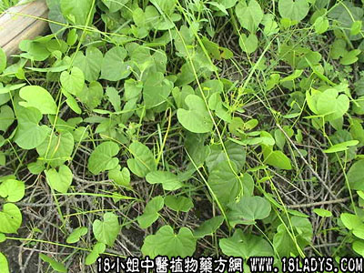

别名：透筋藤、吼筋藤。
植物名：宽筋藤。
生长环境：本品为草质藤本。生于灌木丛中或疏林下，常缠绕于灌木或乔木上，耐旱性强，虽切断根部而茎残存他物上仍不易枯死。
分布：广东及广西的南部，广州近郊常见。
入药部分：茎。
采集期：全年
自采地点：郊外。
性味：性凉、味苦。
功能：宽筋活络。
主治、用量和用法：治四肢筋骨抽痛：干用5钱至1两两清水煎服。
验方：（治筋骨抽痛方）宽筋藤、臭屎茉莉、豆豉羌各5钱。清水五碗，煎成一碗。或加猪脚筋、猪脚同煎服。
（方解）四肢筋骨抽痛，乃湿邪化火，湿火流筋之候。宽筋藤苦凉而具宽筋活络作用，善解筋骨强痛，配臭屎茉莉、豆豉羌活血祛风湿，则标本并治，其效益彰。再宜注意“崧筋藤”适宜于痿痹无力，宽筋藤适宜于痉挛性痛，不可误用。
（方歌）筋骨抽痛宽筋藤，勿将崧筋作宽筋，加入豆豉臭茉莉，能医强痛奏功勋。